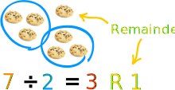
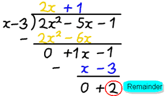

Remainder Theorem
and Factor Theorem
Or: how to avoid Polynomial Long Division when finding factors
Do you remember doing division in Arithmetic?

"7 divided by 2 equals 3 with a remainder of 1"
Each part of the division has names:

Which can be rewritten as a sum like this:
Polynomials
Well, we can also divide polynomials.
f(x) ÷ d(x) = q(x) with a remainder of r(x)
But it is better to write it as a sum like this:
Like in this example using Polynomial Long Division:
Example: 2x2−5x−1 divided by x−3
- f(x) is 2x2−5x−1
- d(x) is x−3

After dividing we get the answer 2x+1, but there is a remainder of 2.
- q(x) is 2x+1
- r(x) is 2
In the style f(x) = d(x)·q(x) + r(x) we can write:
2x2−5x−1 = (x−3)(2x+1) + 2
But you need to know one more thing:
The degree of r(x) is always less than d(x)
Say we divide by a polynomial of degree 1 (such as "x−3") the remainder will have degree 0 (in other words a constant, like "4").
We will use that idea in the "Remainder Theorem":
The Remainder Theorem
When we divide f(x) by the simple polynomial x−c we get:
f(x) = (x−c)·q(x) + r(x)
x−c is degree 1, so r(x) must have degree 0, so it is just some constant r :
f(x) = (x−c)·q(x) + r
Now see what happens when we have x equal to c:
So we get this:
The Remainder Theorem:
When we divide a polynomial f(x) by x−c the remainder is f(c)
So to find the remainder after dividing by x-c we don't need to do any division:
Just calculate f(c).
Let us see that in practice:
Example: The remainder after 2x2−5x−1 is divided by x−3
(Our example from above)
We don't need to divide by (x−3) ... just calculate f(3):
2(3)2−5(3)−1 = 2x9−5x3−1
= 18−15−1
= 2
And that is the remainder we got from our calculations above.
We didn't need to do Long Division at all!
Example: The remainder after 2x2−5x−1 is divided by x−5
Same example as above but this time we divide by "x−5"
"c" is 5, so let us check f(5):
2(5)2−5(5)−1 = 2x25−5x5−1
= 50−25−1
= 24
The remainder is 24
Once again ... We didn't need to do Long Division to find that.
The Factor Theorem
Now ...
What if we calculate f(c) and it is 0?
... that means the remainder is 0, and ...
... (x−c) must be a factor of the polynomial!
We see this when dividing whole numbers. For example 60 ÷ 20 = 3 with no remainder. So 20 must be a factor of 60.
Example: x2−3x−4
f(4) = (4)2−3(4)−4 = 16−12−4 = 0
so (x−4) must be a factor of x2−3x−4
And so we have:
The Factor Theorem:
When f(c)=0 then x−c is a factor of f(x)
And the other way around, too:
When x−c is a factor of f(x) then f(c)=0
Why Is This Useful?
Knowing that x−c is a factor is the same as knowing that c is a root (and vice versa).
The factor "x−c" and the root "c" are the same thing
Know one and we know the other
For one thing, it means that we can quickly check if (x−c) is a factor of the polynomial.
Example: Find the factors of 2x3−x2−7x+2
The polynomial is degree 3, and could be difficult to solve. So let us plot it first:

The curve crosses the x-axis at three points, and one of them might be at 2. We can check easily:
f(2) = 2(2)3−(2)2−7(2)+2
= 16−4−14+2
= 0
Yes! f(2)=0, so we have found a root and a factor.
So (x−2) must be a factor of 2x3−x2−7x+2
How about where it crosses near −1.8?
f(−1.8) = 2(−1.8)3−(−1.8)2−7(−1.8)+2
= −11.664−3.24+12.6+2
= −0.304
No, (x+1.8) is not a factor. We could try some other values near by and maybe get lucky.
But at least we know (x−2) is a factor, so let's use Polynomial Long Division:
x−2)2x3− x2−7x+2
2x3−4x2
3x2−7x
3x2−6x
−x+2
−x+2
0
As expected the remainder is zero.
Better still, we are left with the quadratic equation 2x2+3x−1 which is easy to solve.
It's roots are −1.78... and 0.28..., so the final result is:
2x3−x2−7x+2 = (x−2)(x+1.78...)(x−0.28...)
We were able to solve a difficult polynomial.
Summary
The Remainder Theorem:
- When we divide a polynomial f(x) by x−c the remainder is f(c)
The Factor Theorem:
- When f(c)=0 then x−c is a factor of f(x)
- When x−c is a factor of f(x) then f(c)=0